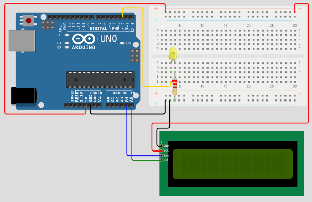
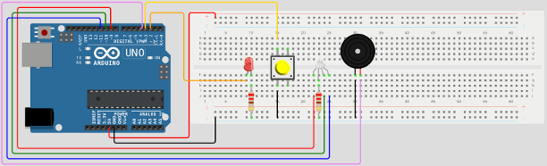
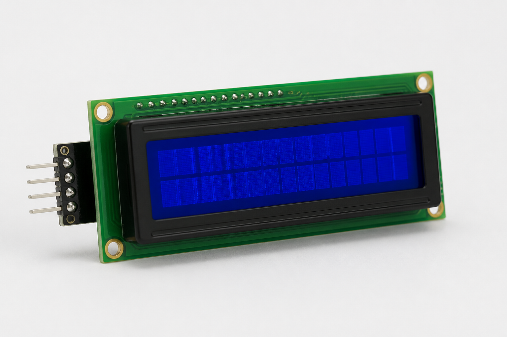
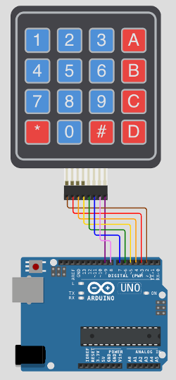
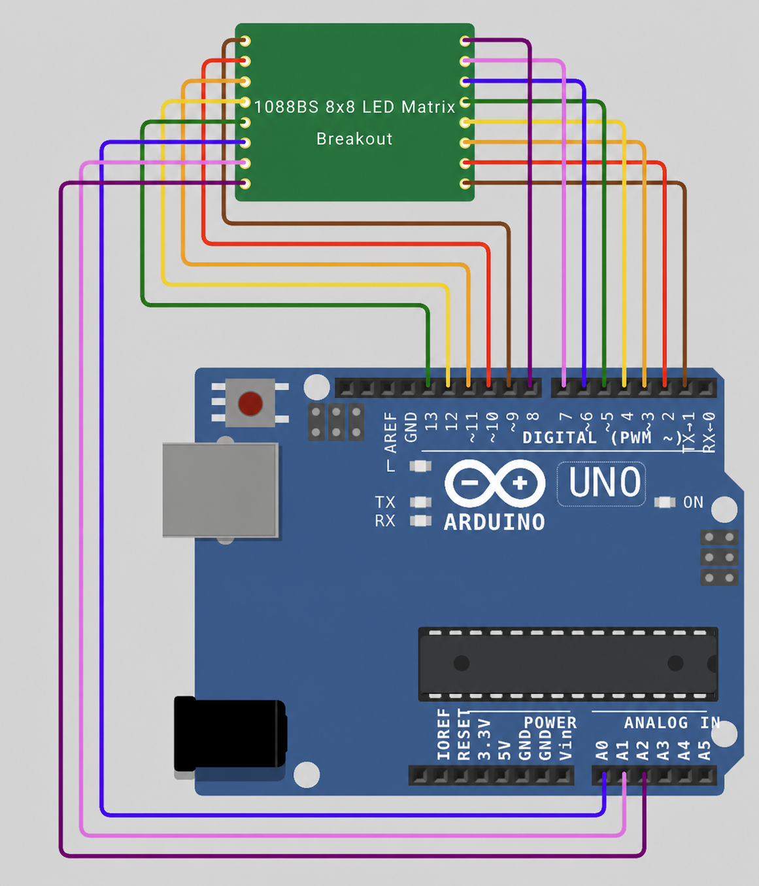
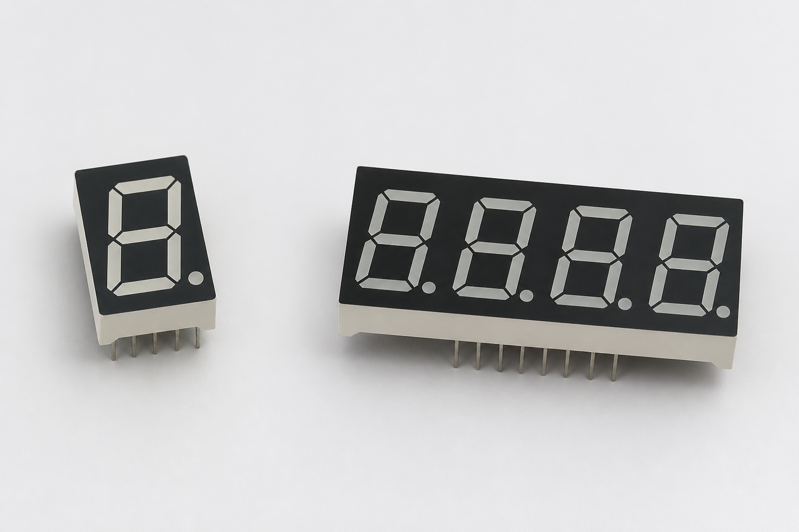
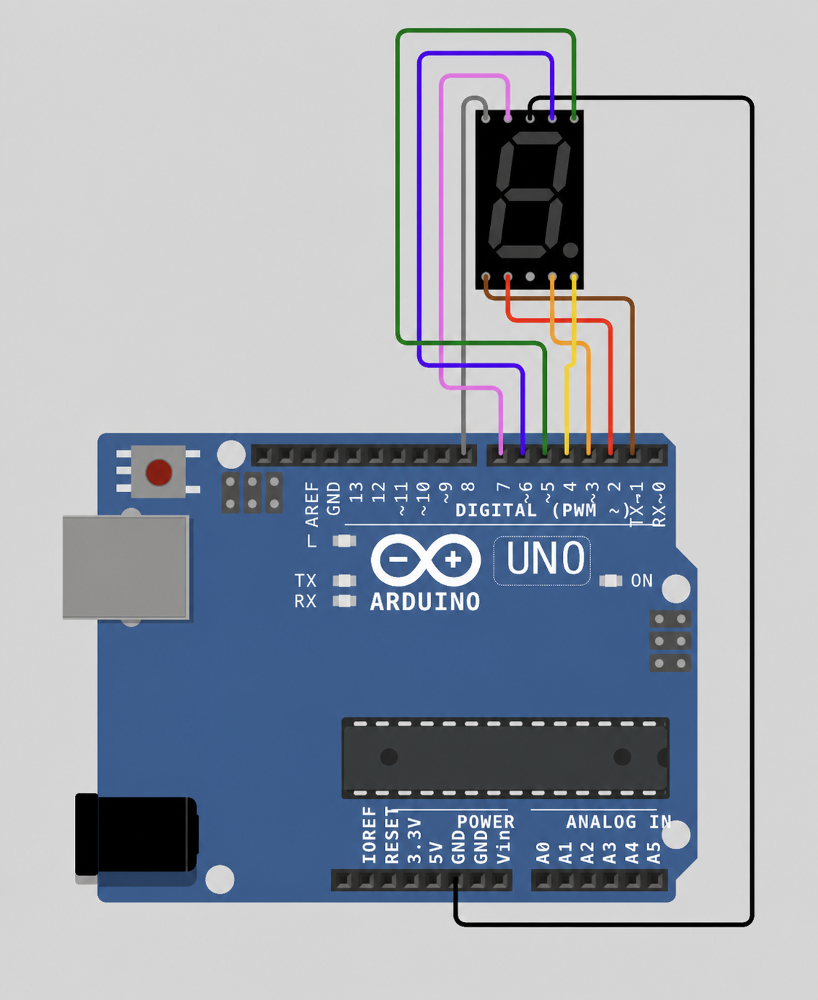
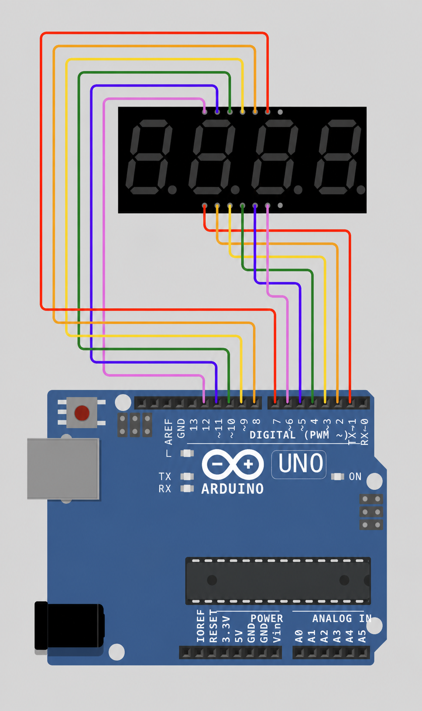
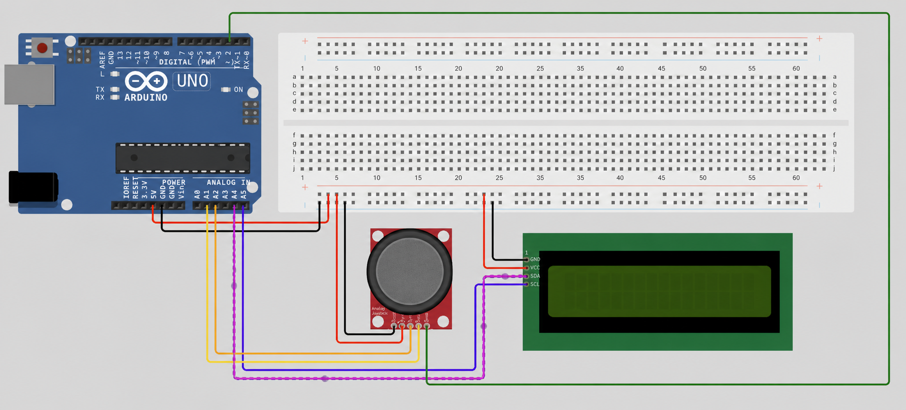

UNO
Arduino Uno R3
The Arduino Uno R3 is the controller for the kit. It stores and runs the compiled program, receives power and uploads through USB, and connects to components through its numbered pins.
Bar-Ilan University
Learn core programming ideas by connecting code to the physical world. Read signals from buttons and sensors, represent information in a program, and control lights, sound, and displays with the course Arduino library.
Begin the guideThe computing platform
An Arduino Uno is a small computer designed to interact directly with electronic components. Unlike a desktop computer, it normally runs one compiled program repeatedly and has no operating system, keyboard, or screen of its own. The course kit supplies those interactions as separate components.
The board contains a processor, program memory, working memory, a USB connection, and electrical connection points called pins. Your C program configures each pin before using it. An input pin observes a voltage produced by a button or sensor. An output pin produces a voltage that controls an LED, buzzer, or display.
Digital pins use two logical states. LOW is approximately 0 volts and represents 0; HIGH is approximately 5 volts and represents 1. The voltage is the physical signal; LOW and HIGH are the names used by the program. Analog input pins measure a range of voltages and convert that measurement to an integer from 0 to 1023.
For convenience, each kit includes a breadboard for temporary electrical connections. In the central area, each numbered row is divided into two groups of five connected holes: A–E on one side of the center gap and F–J on the other. Holes within one five-hole group share the same electrical point; the center gap separates the two groups. Component legs that must remain electrically separate belong in different rows or on opposite sides of the gap. The long side rails are commonly used to distribute 5V and GND. A working circuit requires a complete electrical path through power, signal, and ground.
The Arduino Uno R3 is the controller for the kit. It stores and runs the compiled program, receives power and uploads through USB, and connects to components through its numbered pins.
A board for connecting parts without soldering. Holes in the same short row are connected underneath. Long red and blue rows are usually for power.
The kit includes red, yellow, green, and RGB LEDs. A standard LED produces one color; an RGB LED combines red, green, and blue channels to create colors.
A push button opens or closes an electrical connection. The program can read that change as a digital input.
One- and four-digit displays build numbers from seven named segments and an eighth light for the decimal point.
An active buzzer makes one sound when switched on. A passive buzzer plays different pitches according to the frequency supplied by the program.
The rigid and membrane keypads both contain 16 buttons in four rows and four columns.
The 8×8 dot matrix draws simple pictures from individual points of light. The RGB matrix can display colored patterns.
Reports horizontal and vertical movement. Pressing the stick also acts as a button.
A text screen with two lines. Each line has room for 16 characters.
The sockets marked 0–13 and A0–A5 are called pins. A wire connects a component to a pin. “Connect the button to pin 2” means the socket marked 2 on the Arduino.
Getting started
This walkthrough begins with a complete source file and takes it through compilation and upload. The program uses only function calls; control structures are introduced later in the course.
Disconnect the USB cable before inserting or moving components.

#include "arduino.h"
#include "lcd.h"
int main(void)
{
pinMode(2, OUTPUT);
lcdBegin(16, 2);
lcdPrintf("Hello, World!");
digitalWrite(2, HIGH);
}intro2cs-lib folder contains the shared public headers, intro2cs-arduino-lib.a for the physical Arduino, and intro2cs-arduino-simulator-lib.a for running the same API in a computer terminal.ex0-arduino.c. The .c extension identifies it as C source code.intro2cs-lib folder.pwd to confirm the current directory and ls to confirm that both the source file and library folder are present.#include provides the declarations for a library module. arduino.h is required for basic pin functions and lcd.h for screen functions. pinMode configures pin 2 as an electrical output. lcdBegin initializes the LCD before it is used. The final two calls send characters to the screen and set pin 2 to HIGH.
Some display features are refreshed in the background. During experiments, adding while (1) { } at the end of main keeps the program active. Remove it when an assignment requires the submitted function to finish.
From C file to Arduino
Compilation translates the C source and library into an executable file. Conversion produces the HEX data that will be stored in the Arduino’s program memory. Uploading transfers that data over USB.
avr-gcc -mmcu=atmega328p -DF_CPU=16000000UL -Os -std=c99 \
-Iintro2cs-lib/headers ex0-arduino.c \
intro2cs-lib/intro2cs-arduino-lib.a -o ex0-arduino.elfavr-objcopy -O ihex -R .eeprom ex0-arduino.elf ex0-arduino.hexUse the instructions below for your operating system, then copy the complete connection name.
avrdude -p atmega328p -c arduino -P /dev/cu.usbmodem2101 \
-b 115200 -D -U flash:w:ex0-arduino.hex:iRun ls /dev/cu.usb*. Copy the complete result, such as /dev/cu.usbmodem2101, and use it after -P.
Run ls /dev/ttyACM* /dev/ttyUSB*. Copy the device that appears when the Arduino is connected, commonly /dev/ttyACM0. Your user may need serial-port permission.
Open Device Manager → Ports (COM & LPT), connect the Arduino, and note the new entry such as COM4. In the upload command use -P COM4.
In every operating system, the value after -P identifies the USB serial connection. Copy the exact value shown by your computer; do not copy the example unchanged.
1 · Include arduino.h
To use this module, add #include "arduino.h". It exposes functions for configuring pins, sending and reading electrical signals, measuring analog voltages, delaying execution, and controlling a passive buzzer.
Before using a digital pin, configure its direction with pinMode. An output is driven by the Arduino, so the program chooses the voltage. An input is driven by the external circuit, so the program observes the voltage without forcing it.
The Arduino sends a signal. Example: turn an LED on or off.
The Arduino listens. The circuit must provide a clear HIGH or LOW signal.
The Arduino listens and holds the pin HIGH internally. A button between the pin and GND reads HIGH when released and LOW when pressed.
Connect the standard LED to pin 2 through a resistor, the button between pin 3 and GND, the RGB LED’s red, green, and blue channels to pins 9, 10, and 11 through resistors, and the passive buzzer to pin 4 and GND. While the button is released, the program alternates the standard LED, two RGB colors, and two pitches. Pressing the button ends the loop and switches all LEDs off.
#include "arduino.h"
#define LED 2
#define BUTTON 3
#define RED 9
#define GREEN 10
#define BLUE 11
#define BUZZER 4
int main()
{
pinMode(BUZZER, OUTPUT);
pinMode(BUTTON, INPUT_PULLUP);
pinMode(LED, OUTPUT);
pinMode(RED, OUTPUT);
pinMode(GREEN, OUTPUT);
pinMode(BLUE, OUTPUT);
while (digitalRead(BUTTON) == HIGH) {
digitalWrite(LED, HIGH);
analogWrite(RED, 0xf0);
analogWrite(GREEN, 0x05);
analogWrite(BLUE, 0xab);
tone(BUZZER, 1000, 500);
delay(500);
digitalWrite(LED, LOW);
analogWrite(RED, 0x0f);
analogWrite(GREEN, 0x52);
analogWrite(BLUE, 0xc3);
tone(BUZZER, 2000, 500);
delay(500);
}
digitalWrite(LED, LOW);
analogWrite(RED, 0);
analogWrite(GREEN, 0);
analogWrite(BLUE, 0);
}
| Function | What it does | Returns |
|---|---|---|
pinMode(char pin, char mode) | Configures the electrical role of an Arduino pin. OUTPUT allows the program to drive LOW or HIGH. INPUT lets an external circuit determine the voltage. INPUT_PULLUP is an input with an internal resistor that keeps it HIGH until a button connects it to GND. | — |
digitalWrite(char pin, unsigned char value) | Sets a configured output to HIGH (approximately 5V) or LOW (approximately 0V). This is appropriate for on/off components such as an LED or active buzzer. | — |
digitalRead(char pin) | Samples the electrical state of a configured input at the instant of the call. | HIGH or LOW |
analogRead(char pin) | Measures the voltage on A0–A5 and converts the range from 0V to 5V into an integer scale. | 0–1023 |
analogWrite(char pin, unsigned char value) | Produces a rapidly switched signal whose average power is controlled by a value from 0 to 255. On pins 3, 5, 6, 9, 10, and 11, the pin still switches only between 0V and 5V, but it does so rapidly. The value controls the percentage of time spent HIGH: 0 is always LOW, 255 is always HIGH, and 128 is HIGH approximately half the time. LEDs appear dimmer because the eye averages these fast pulses. | — |
delay(unsigned long ms) | Stops execution for the requested number of milliseconds. No later statement runs during the delay. | — |
delayMicroseconds(unsigned long us) | Stops execution for a much shorter interval measured in microseconds. | — |
millis(void) | Reads a non-blocking timestamp containing the milliseconds elapsed since the program started. Subtract an earlier timestamp from the current value when measuring a duration. | An unsigned long timestamp; wraps after about 49.7 days |
tone(unsigned char pin, unsigned int frequency, long duration) | Alternates a passive-buzzer pin HIGH and LOW at the requested frequency, in hertz, for the requested positive duration in milliseconds. This implementation blocks until the note finishes. | — |
noTone(unsigned char pin) | Drives the selected buzzer pin LOW. Because tone is blocking, this is used after separate/manual buzzer control rather than to interrupt a running note. | — |
Configuration precedes use: call pinMode before reading from or writing to a basic pin.
2 · Include serial.h and stdio.h
Serial communication sends characters between the Arduino and a computer through the USB connection. It is useful for displaying intermediate results, observing program state, and accepting simple keyboard input without adding another physical component.
Call serialBegin(baud) once before using serial input or output. This configures the Arduino’s serial hardware, waits briefly so a serial monitor can reconnect after the board resets, and connects the standard C streams stdin and stdout to the USB serial connection. After that, familiar functions from stdio.h can be used: printf and putchar transmit characters, while getchar waits for and returns one received character.
Keep pins 0 and 1 free: the Arduino uses pin 0 to receive serial data and pin 1 to transmit it. Do not connect another component to either pin while serial communication is active. The current default keypad, matrix, and seven-segment wiring begins at pin 2, so it leaves both serial pins free.
The baud rate is the number of transmitted signal units per second. The Arduino program and the serial terminal must use the same value; 9600 is the recommended starting value. A call to getchar pauses the program until a character arrives. Received carriage returns are converted to newline characters, and typed characters are echoed back to the terminal.
Upload the program, then open the Arduino’s USB serial connection in a serial-monitor application and select the same baud rate passed to serialBegin. Close the monitor before uploading again because only one program can normally use the serial connection at a time.
#include "serial.h"
#include <stdio.h>
int main(void)
{
serialBegin(9600);
printf("Enter one character: ");
char value = (char)getchar();
printf("\nYou entered: %c\n", value);
while (1) { }
}| Function | What it does | Returns |
|---|---|---|
serialBegin(unsigned long baud) | Configures the Arduino’s built-in serial transmitter and receiver using the requested unsigned long baud rate, then redirects standard C input and output to that connection. Call it once before printf, putchar, or getchar. | — |
printf(const char *format, ...) | Formats values according to the format string and transmits the resulting characters. Include stdio.h. Common introductory conversions include %d for an integer, %c for a character, %s for a string, and %x for hexadecimal. | The number of characters transmitted, or a negative value if an output error occurs |
getchar(void) | Waits until one character is received from the computer, echoes it, converts carriage return to newline, and returns its character code. Include stdio.h. | The received character as an int |
The simulator provides the same serialBegin call. Its standard input and output already refer to the terminal, so the same source program reads with getchar and prints with printf on the computer. Each matrix pixel is represented by one character: # for lit and a space for unlit, so every rendered row contains eight characters between its | delimiters. Initialization functions are silent. Calls to delay(ms) print [delay] N ms, and calls to delayMicroseconds(us) print [delay] N us; simulated delays report the requested duration but do not pause the program. Input functions read from standard input without adding prompts, which keeps the output suitable for comparison with automatic tests.
3 · Include lcd.h
The screen presents two rows of sixteen character cells. Internally it remembers both the characters and a cursor position—the location where the next write begins.
lcdPrint writes a sequence of characters beginning at the cursor and advances the cursor after every character. It does not erase earlier content. lcdWrite performs the same operation for one character value.
lcdSetCursor(column, row) selects a location before writing. Coordinates begin at zero, so the upper-left cell is (0, 0) and the first cell of the second line is (0, 1). Clearing and scrolling are separate operations: clearing replaces cells with spaces, while scrolling shifts the visible window over the stored display contents.
The physical controller normally stores up to 40 character positions per row although only 16 are visible. lcdPrint has no software length check, but text beyond the controller memory wraps and may overwrite earlier positions. For predictable scrolling, keep a scrolling line to at most 40 characters. lcdPrintf additionally limits its formatted result to 63 characters.

#include "lcd.h"
int main(void)
{
lcdBegin(16, 2);
lcdSetCursor(0, 0);
lcdPrint("Hello!");
lcdSetCursor(0, 1);
lcdPrintf("Score: %d", 42);
}| Function | What it does | Returns |
|---|---|---|
lcdBegin(char cols, char rows) | Initializes communication with the screen, configures its dimensions, turns the display on, and clears its character memory. For the kit screen, pass 16, 2. Call it once before any other LCD operation. | — |
lcdPrint(const char *str) | Sends every character in a null-terminated C string to consecutive screen cells, starting at the current cursor. It advances the cursor but does not clear existing content first. | — |
lcdWrite(char value) | Sends one character code to the current cursor position. Use it for a single ordinary character or for a custom character created with lcdCreateChar. | — |
lcdPrintf(const char *format, ...) | Formats integers, strings, and characters using familiar printf placeholders, then prints the result. The internal formatted text is limited to 63 characters. | — |
lcdSetCursor(unsigned char col, unsigned char row) | Moves the insertion point without modifying displayed text. On the kit screen, columns are 0–15 and rows are 0–1. | — |
lcdClear(void) / lcdClearRow(unsigned char row) | Erases the entire display, or replaces every cell of one row with a space. Both operations leave the cursor at the beginning of the cleared area. | — |
lcdHome(void) | Moves the cursor to the upper-left cell without erasing any characters. | — |
lcdScrollDisplayLeft(void) / lcdScrollDisplayRight(void) | Shifts the complete visible display by one character position. Repeated calls produce a scrolling effect. | — |
lcdCursor(void) / lcdNoCursor(void) | Shows or hides the underline that marks the current cursor position. | — |
lcdBlink(void) / lcdNoBlink(void) | Enables or disables blinking at the current cursor position. | — |
lcdDisplay(void) / lcdNoDisplay(void) | Turns the visible characters on or off without erasing the stored text. Calling lcdDisplay restores it. | — |
lcdLeftToRight(void) / lcdRightToLeft(void) | Selects the direction in which the cursor moves after a character is written. | — |
lcdAutoscroll(void) / lcdNoAutoscroll(void) | Controls whether the display automatically shifts when a new character is written. | — |
lcdCreateChar(char location, const unsigned char charmap[8]) | Stores an eight-row, five-pixel-wide bitmap in one of eight custom-character positions, numbered 0–7. | — |
lcdBacklight(void) / lcdNoBacklight(void) | Turns the screen’s background illumination on or off; stored characters are not changed. | — |
4 · Include keypad.h
A keypad is an array of switches at the intersections of four row wires and four column wires. The library scans those intersections and converts the pressed position to an integer from 0 through 15.
Number the keypad connector positions from 1 through 8 in the orientation shown. Connect keypad position 1 to Arduino pin 2, position 2 to pin 3, and continue through position 8 to pin 9. The first four carry rows and the final four carry columns. Pins 0 and 1 remain free for serial communication. Printed symbols vary between keypads, so the API uses position-based values:

#include "keypad.h"
int main(void)
{
keypadBegin(NULL, NULL);
int key = keypadGetKey();
}| Function | What it does | Returns |
|---|---|---|
keypadBegin(const unsigned char rows[4], const unsigned char cols[4]) | Initializes the eight keypad connections and prepares the library to scan the sixteen button positions. Pass NULL, NULL to use Arduino pins 2–9 in connector order. Call once before reading keys. | — |
keypadGetKey(void) | Scans each row until it detects a closed row-column switch. The function waits while no key is pressed, then waits again until the selected key is released so one physical press produces one result. | The position value 0–15 |
5 · Include matrix.h
The matrix contains 64 LEDs, but only sixteen external legs: eight select rows and eight select columns. The library activates rows rapidly in sequence, producing the appearance of one stable image.
Connect matrix connection 1 to Arduino pin 2, connection 2 to pin 3, and continue through connection 16 to Arduino pin 17 (also marked A3). Each Arduino pin number is one greater than the matrix connection number, leaving pins 0 and 1 free for serial communication.
To identify the connections, hold the matrix with its printed model code facing you. The pins on the front-facing side are read left to right according to the component numbering; after turning the component around, the visible order is reversed. Check the package notch or supplied pin figure before inserting it, because rotating the matrix changes which physical leg enters each breadboard row.
| Matrix connection | Arduino pin |
|---|---|
| 1–12 | 2–13 respectively |
| 13 | 14 / A0 |
| 14 | 15 / A1 |
| 15 | 16 / A2 |
| 16 | 17 / A3 |

#include "matrix.h"
int main(void)
{
unsigned char picture[8] = {
0b00111100, 0b01000010, 0b10100101, 0b10000001,
0b10100101, 0b10011001, 0b01000010, 0b00111100
};
matrixBegin(NULL, NULL);
matrixSet(picture);
}The same picture can be passed as one 64-bit value with matrixSet64(0x3C42A581A599423CULL);. Use unsigned long long, not int: on the Uno, int is only 2 bytes, while a complete matrix requires 8 bytes.
The array holds one eight-bit pattern for each physical row. A 1 lights a dot and a 0 leaves it dark. Within each pattern, the leftmost binary digit controls the leftmost matrix column.
| Function | What it does | Returns |
|---|---|---|
matrixBegin(const unsigned char rows[8], const unsigned char cols[8]) | Records the row and column pin assignments, configures all sixteen pins, clears the stored image, and starts automatic refresh. Pass NULL, NULL for the default wiring. Call once before changing the image. | — |
matrixSet(const unsigned char frame[8]) | Copies eight packed row patterns into the matrix’s internal image. The background refresh immediately begins displaying the new contents. | — |
matrixSet64(unsigned long long frame) | Accepts one unsigned long long containing all 64 pixel bits. The most significant eight bits describe the top row; the least significant eight bits describe the bottom row. Within every row, the most significant bit is the leftmost pixel. | — |
matrixSet2D(const unsigned char frame[8][8]) | Converts an 8×8 C array into packed row patterns. Every nonzero array element becomes a lit dot. | — |
matrixSetRow(unsigned char row, const unsigned char content[8]) | Replaces one row, numbered 0–7, using an array of eight values. Nonzero values light their corresponding columns. | — |
matrixSetRowByte(unsigned char row, unsigned char content) | Replaces one row with a compact eight-bit pattern; bit 7 is the leftmost column. | — |
matrixSetPixel(unsigned char row, unsigned char col, unsigned char value) | Changes one dot without altering the other 63. Rows and columns are numbered 0–7; zero turns the dot off and nonzero turns it on. | — |
matrixClear(void) | Sets every stored row pattern to zero. Automatic refresh continues, but all dots are dark. | — |
matrixStop(void) | Stops automatic refresh and electrically disables all rows and columns. Call matrixBegin again before displaying another image. | — |
6 · Include digits.h
Each digit is constructed from seven independently controlled bars and an optional decimal point. The one-digit display controls one set directly; the four-digit display shares the segment connections and selects its positions rapidly in sequence.

The API represents the on/off state of all eight lights as the eight binary digits of one unsigned char. From right to left, its bits control A, B, C, D, E, F, G, and DP.
bit: 7 6 5 4 3 2 1 0
segment: DP G F E D C B A
zero: 0 0 1 1 1 1 1 1
C value: 0b00111111Zero lights A–F, but not G or DP.
Use digitsBegin(NULL, NULL, 1) for one digit, or digitsBegin(NULL, NULL, 4) for four.
#include "digits.h"
int main(void)
{
digitsBegin(NULL, NULL, 1);
digitsSetSegments(0b00111111, 0b0001); /* show 0 */
}| Function | What it does | Returns |
|---|---|---|
digitsBegin(const unsigned char segmentPins[8], const unsigned char digitPins[4], unsigned char digitCount) | Stores the wiring, configures the segment and digit-selection pins, clears the display, and starts automatic refresh. Pass NULL arrays for default wiring and choose a count from 1 through 4. Call once before setting segments. | — |
digitsSetSegments(unsigned char segments, unsigned char positions) | Copies the same eight-bit segment pattern to each selected position. The positions argument is also a bit pattern: bit 0 selects the rightmost digit, bit 1 the next digit, and so on. | — |
digitsSetDisplay(unsigned long display) | Updates all digit positions from one 32-bit value containing four consecutive eight-bit segment patterns. The least significant eight bits describe the rightmost position. | — |
digitsSetSegment(unsigned char digit, unsigned char segment, unsigned char value) | Changes one bar without replacing the rest of the display. Digit 0 is rightmost; segments 0–7 mean A, B, C, D, E, F, G, DP. HIGH turns the selected segment on. | — |
digitsClear(void) | Clears every stored segment pattern. Refresh continues with all segments off. | — |
The simulator decodes standard segment patterns and displays the digit itself, for example [digits] 5. A decimal point appears after the digit, as in [digits] 5.. A cleared position is shown as _. An unrecognized pattern is shown as ? (0xNN), where NN is its complete two-digit hexadecimal value; for example, [digits] ? (0x41).


Connect A, B, C, D, E, F, G, DP to Arduino pins 8, 7, 4, 3, 2, 9, 6, 5 respectively. Connect the common-cathode line to GND. The default uses pins 2–9 and keeps pins 0 and 1 free. Use a resistor on every segment line.
Connect segment lines A, B, C, D, E, F, G, DP to Arduino pins 12, 8, 5, 3, 2, 11, 6, 4. Connect digit selections from physical left to right to pins 13, 10, 9, 7. The default uses pins 2–13 and keeps pins 0 and 1 free. Use a resistor on every segment line.
7 · Include joystick.h
The joystick combines two variable electrical controls—one horizontal and one vertical—with a push button beneath the stick. The two axis voltages change continuously as the stick moves.
| Joystick | Arduino |
|---|---|
| GND | GND |
| +5V / VCC | 5V |
| VRx | A0 |
| VRy | A1 |
| SW | 2 |

#include "joystick.h"
int main(void)
{
joystickBegin(A0, A1, 2);
int x = joystickReadX();
int pressed = joystickPressed();
}| Function | What it does | Returns |
|---|---|---|
joystickBegin(unsigned char xPin, unsigned char yPin, unsigned char buttonPin) | Stores the three signal-pin assignments and configures the push button as an input with its internal pull-up enabled. Call once before reading the joystick. | — |
joystickReadX(void) / joystickReadY(void) | Samples one axis through the Arduino’s analog converter. Values near the middle represent the resting position; values move toward either end as the stick is displaced. | An integer from 0 to 1023 |
joystickPressed(void) | Samples the push button once and returns immediately. It remains true for as long as the stick is held down. | 1 when held; otherwise 0 |
joystickClicked(void) | If the button is not down, returns immediately. If it is down, waits for the release and reports one completed click. This prevents a held button from being counted repeatedly. | 1 after a completed click; otherwise 0 |
joystickLeft(void) / joystickRight(void) / joystickUp(void) / joystickDown(void) | Reads the appropriate axis and classifies it into one named direction. The functions return immediately and include a central neutral region. | 1 when in that direction; otherwise 0 |
The direction helpers assume the component labels face the user and the connector edge points away from the user. In that orientation, pushing the stick toward the printed left, right, up, or down side activates the matching helper. If your module is mounted differently, rotate it or exchange the direction used in the program.
When combining components
Most beginners can skip this until using several components together.
The processor contains three hardware timers: circuits that count clock pulses independently of the main program. The library uses Timer0 to switch rapidly between the positions of the four-digit display and Timer1 to scan the rows of the LED matrix. analogWrite also relies on these timers for particular pins. Two features that reconfigure the same timer cannot reliably operate together. Assigning display refresh to a different timer would not remove this limitation; it would make a different pair of analogWrite pins unavailable.
digitsBegin, do not use analogWrite on pins 5 or 6.matrixBegin, do not use analogWrite on pins 9 or 10.serialBegin, reserve pins 0 and 1 for serial communication. The current default keypad, matrix, and seven-segment wiring starts at pin 2 and keeps both serial pins free.The buzzer does not reserve a timer; the program simply waits while a note plays.
Include arduino.h
millis() returns an unsigned long timestamp containing the number of milliseconds elapsed since the program started. Unlike delay(), reading a timestamp does not stop the program.
#include "arduino.h"
unsigned long started = millis();
while (millis() - started < 1000UL) {
/* Other work can run here for one second. */
}The counter wraps to zero after about 49.7 days. Comparing millis() - started with a duration keeps working correctly across that wrap.
millis() uses Timer0. PWM on Arduino pins 5 and 6 remains available. The seven-segment display function digitsBegin() also configures Timer0, so do not combine automatic digit refresh with millis(); timestamps will no longer be reliable after the display timer is started. In the computer simulator, millis() measures real wall-clock time, while simulated delays print their requested duration and do not wait.
Something did not work?
Include the matching file: arduino.h, serial.h, lcd.h, keypad.h, matrix.h, digits.h, or joystick.h. Keep the compile command’s -Iintro2cs-lib/headers.
Unplug USB, check every wire, and ensure the component’s Begin function is called first.
Check four wires, adjust the small contrast control, and call lcdBegin(16, 2) before printing.
Reconnect USB, run ls /dev/cu.usb*, and copy its result after -P.